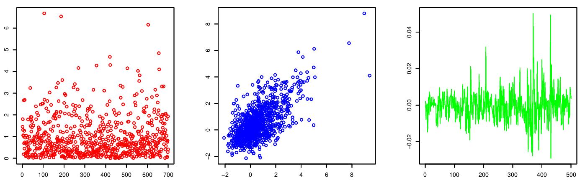

2 Classical Theory of Maxima of IID Variables

There are many ways to undertake tail estimation based on different characteristics of the sample which we may consider extreme. We will focus on univariate features. We start by assuming that the extremes are independent and identically distributed (IID). In this context we cover
- block maxima (Chapter 2)
- exceedances of some fixed level (Section 3.2)
- \(r\)-largest/smallest values (Section 3.3)
We then move on to non-identically distributed data, and over
Then we consider data which cannot be assumed to be independent, looking at
Finally, we look at bivariate extremes through
- dependence measures (Chapter 7)
2.1 Block Maxima
We will only present extreme value theory and methods for the upper tail. This is not restrictive due to the symmetry in the arguments. For example, let \[\begin{align*} M_{X,n}=\max(X_1, \ldots ,X_n) \mbox{ and } m_{X,n}=\min(X_1, \ldots ,X_n). \end{align*}\] Then \[\begin{align*} m_{X,n}=-\max(-X_1, \ldots ,-X_n)=-M_{-X,n}, \end{align*}\] so all distributional results for minima can be derived from results for maxima.
Notation: when it is clear we will drop the \(X\) subscript from \(M_{X,n}\), i.e. \[\begin{eqnarray*} M_{n}=\max(X_1, \ldots ,X_n). \end{eqnarray*}\]
2.1.1 Distributional Theory for \(M_n\)
For the remainder of this section, we will focus on the distribution of sample maxima. Suppose that \(X_1, \ldots, X_n\) is a sequence of IID random variables with distribution function \(F\). Then \[\begin{eqnarray*} \Pr(M_n\leq x) & = & \Pr(X_1\leq x,\ldots, X_n\leq x)\\ & = & \Pr(X_1\leq x)\ldots \Pr(X_n\leq x)\\ & = & \{F(x)\}^n. \end{eqnarray*}\]
If we are interested in \(M_n\) but \(F\) is unknown, this formula is not of any help. As we are often interested in the maximum of a large number of variables this suggests an approach to modelling \(M_n\) using an asymptotic argument. In particular, we may hope that a simple formulation may arise for the distribution of \(M_n\) as \(n\rightarrow \infty\), and that this formulation may not depend too strongly on the form of \(F\).
However, \(M_n\rightarrow x^F\) in probability as \(n\rightarrow \infty\), where \[\begin{eqnarray*} x^F=\sup\{x: F(x)<1\}, \end{eqnarray*}\] From this, \(M_n\) converges to the upper end point of \(F\). The asymptotic distribution of \(M_n\) is termed degenerate.
This suggests that a bit more subtlety is required. Let us see what we can learn from the theory of sums.
Aside on limit results for sums
As previously let \(X_1, \ldots, X_n\) be IID, but now we define \(E(X_i)=\mu\), Var\((X_i)=\sigma^2<\infty\).
Let \[\begin{eqnarray*} \overline{X}_n =\frac{\sum_{i=1}^n X_i}{n}. \end{eqnarray*}\] The weak law of large numbers says that \[\begin{eqnarray*} \overline{X}_n \rightarrow \mu \mbox{ (in probability) as }n\rightarrow \infty. \end{eqnarray*}\] Therefore the asymptotic distribution of \(\overline{X}_n\) is degenerate.
The Central Limit Theorem (CLT) overcomes this problem by including a linear normalisation so that for all fixed \(x\) \[\begin{eqnarray*} \Pr\left(\frac{\overline{X}_n-\mu_n}{\sigma_n}\leq x\right)\rightarrow \Phi(x) \mbox{ as }n\rightarrow \infty, \end{eqnarray*}\] where \(\mu_n=E(\overline{X}_n)=\mu\) , \(\sigma_n=\sqrt{\mbox{Var}(\overline{X}_n)}=\sigma/\sqrt{n}\) and \(\Phi\) is the distribution function of a standard Normal random variable.
CLT revision:
the limit distribution is the same whatever the underlying distribution \(F\) (provided \(\sigma^2<\infty\));
the normalisation gives the variable \[\begin{eqnarray*} n^{1/2}(\overline{X}_n-\mu)/\sigma, \end{eqnarray*}\] i.e. normalisation blows up differences between \(\overline{X}_n\) and \(\mu\).
the normalisation depends on the features of \(F\);
the CLT motivates the model \[\begin{eqnarray*} \overline{X}_n \sim N(\mu,\sigma^2/n) \end{eqnarray*}\] as a model for finite \(n\). This is an asymptotically justified model for observations which are formed by taking sums.
2.1.2 Illustrative example: the maximum of Exponential variables
We now return to maxima. Consider the maximum of Exponential\((1)\) variables \(X_1,\ldots,X_n\). Is it possible to obtain a linear normalisation of \(M_n\) to give a non-degenerate limit distribution?
First take the cumulative distribution function of the Exponential\((1)\) distribution: \[\begin{eqnarray*} F(x)=1-\exp(-x) \mbox{ for } x>0. \end{eqnarray*}\] As \(M_n\rightarrow \infty\) we need to blow up the deviations of \(M_n\) from \(\infty\). Try \(M_n-\log n\). Then \[\begin{eqnarray*} \Pr(M_n-\log n\leq x) &= &\Pr(M_n\leq x+\log n)\\ & = & \{F(x+\log n)\}^n\\ & = & \{1-\exp(-x-\log n)\}^n \mbox{ for } x>-\log n\\ & = & \{1-\exp(-x)\exp(-\log n)\}^n\\ & = & \{1-\exp(-x)/n\}^n\\ & \rightarrow & \exp[-\exp(-x)] \mbox{ as }n \rightarrow \infty \mbox{ for }-\infty < x<\infty. \end{eqnarray*}\]
The last step uses the result \((1+y/n)^n\rightarrow \exp(y)\) as \(n\rightarrow \infty\) for any fixed \(y\).
2.1.3 Extremal Types Theorem (ETT)
For subsequent use, we need to introduce the notion of an equivalence class of distributions, i.e. distributions of the same type
If \(F_1\) and \(F_2\) are two distribution functions and there exist constants \(a>0\) and \(b\) such that \[\begin{eqnarray*} F_2(ax+b)=F_1(x) \mbox{ for all }x, \end{eqnarray*}\] then \(F_1\) and \(F_2\) are of the same type. So the two distributions are the same up to location and scale parameters.
Examples:
- \(N(\mu_1,\sigma_1^2)\) and \(N(\mu_2,\sigma_2^2)\) are of the same type;
- \(\Gamma(\alpha,\beta)\) is Gamma distribution with scale \(\beta\) and shape \(\alpha\), then
\(\Gamma(\alpha,\beta_1)\) and \(\Gamma(\alpha,\beta_2)\) are of the same type;
\(\Gamma(\alpha_1,\beta)\) and \(\Gamma(\alpha_2,\beta)\) are not of the same type.
The following result can be viewed as an analogue to the CLT, for block maxima. Further details can be found in Leadbetter (1983).
Theorem Extremal Types Theorem
If there exist sequences of constants \(a_n>0\) and \(b_n\), such that, as \(n\rightarrow \infty\)
\[\begin{eqnarray*}
\Pr\left(\frac{M_n-b_n}{a_n}\leq x\right)\rightarrow G(x)
\end{eqnarray*}\]
for some non-degenerate distribution \(G\), then \(G\) is of the same type as one of the following distributions:
Gumbel \[\begin{eqnarray*} G(x)=\exp\{-\exp(-x)\} \mbox{ for }-\infty<x<\infty; \end{eqnarray*}\] Fréchet \[\begin{eqnarray*} G(x)=\left\{ \begin{array}{ll} 0 & x\leq 0\\ \exp(-x^{-\alpha}) & x>0, \alpha>0; \end{array} \right. \end{eqnarray*}\] Negative Weibull \[\begin{eqnarray*} G(x)=\left\{ \begin{array}{ll} \exp[-(-x)^{\alpha}] & x<0, \alpha>0;\\ 1 & x\geq 0. \end{array} \right. \end{eqnarray*}\]
2.1.4 The Generalised Extreme Value (GEV) Distribution
For statistical purposes it is inconvenient to work with three distinct classes of limiting distribution as in the ETT, so it is preferable to adopt a parametrisation which unifies these distributions. von Mises (1954) and Jenkinson (1955) derived the Generalised Extreme Value GEV\((\mu,\sigma,\xi)\) distribution with distribution function \[\begin{eqnarray*} G(x) = \exp\left\{-\left[1+\xi\left(\frac{x-\mu}{\sigma}\right)\right]_+^{-1/\xi}\right\} \end{eqnarray*}\] where \(x_+=\max(x,0)\) and \(\sigma>0\), so up to type the GEV distribution is \[\begin{eqnarray*} G(x)=\exp\left[-(1+\xi x)_+^{-1/\xi}\right]. \end{eqnarray*}\]
- Gumbel corresponds to \(\xi=0\) (taken as the limit \(\xi\rightarrow0\));
GEV\((0,1,0)=\) Gumbel; - Fréchet corresponds to \(\xi>0\);
GEV\((1,\alpha^{-1},\alpha^{-1})=\) Fréchet\((\alpha)\); - Negative Weibull corresponds to \(\xi<0\);
GEV\((-1,\alpha^{-1},-\alpha^{-1})=\) Negative Weibull\((\alpha)\).
2.1.5 Unified Extremal Types Theorem (UETT)
Theorem
If there exist sequences of constants \(a_n>0\) and \(b_n\), such that, as \(n\rightarrow \infty\)
\[\begin{eqnarray}
\Pr\left(\frac{M_n-b_n}{a_n}\leq x\right)\rightarrow G(x)
\tag{2.1}
\end{eqnarray}\]
for some non-degenerate distribution \(G\), then \(G\) is of the same type as
\[\begin{eqnarray*}
G(x)=\exp\left[-(1+\xi x)_+^{-1/\xi}\right]
\end{eqnarray*}\]
for some value of \(\xi\).
Notes on UETT:
- \(\xi\) is termed the shape parameter (or tail index);
- \(\xi>0\) heavy upper tail,
\(\xi=0\) Exponential upper tail,
\(\xi<0\) tail with finite upper limit; - UETT does not guarantee the existence of a non-degenerate limit or say which type will arise (i.e. which \(\xi\) value) when such a limit exists (it depends on \(F\), but only weakly);
- Unlike the CLT, the UETT does not tell us how to pick \(a_n\) and \(b_n\) (see Section 2.2);
- Unlike the CLT, the UETT has an infinite set of limit distributions (indexed by \(\xi\)).
2.1.6 Moments of the GEV
Suppose \(Y\sim\) GEV\((\mu,\sigma,\xi)\). Then the moments of the GEV are as follows (there is no need to derive these). If \(r>0\) and \(\xi>1/r\) then \[\begin{eqnarray*} E(Y^r)=\sum_{j=0}^r \binom{r}{j} (\mu-\sigma/\xi)^j(\sigma/\xi)^{r-j} \Gamma(1-\xi(r-j)) \end{eqnarray*}\] and \(E(Y^r)=\infty\) if \(\xi\geq1/r\).
So the expectation and variance are not always finite, in particular \[\begin{eqnarray*} E(Y)=\mu+\frac{\sigma}{\xi}[\Gamma(1-\xi)-1]\mbox{ for }\xi<1 \end{eqnarray*}\] and Var\((Y)=\infty\) if \(\xi\geq 1/2\).
2.1.7 Connections between CLT and UETT
Is the UETT really much weaker than the CLT?
- UETT gives a family of limit distribution types, parametrised by \(\xi\),
- the CLT gives a single type, the Normal distribution.
The difference is really a matter of story-telling. The CLT has the condition that Var\((X_i)<\infty\) which is not required for the UETT.
If this restriction is removed then the results look much more similar.
If Var\((X_i)=\sigma^2<\infty\), \[\begin{eqnarray*} \Pr\left(\frac{n^{1/2}(\overline{X}_n-\mu)}{\sigma}\leq x\right) \rightarrow \Phi(x) \mbox{ as }n\rightarrow \infty, \end{eqnarray*}\] If Var\((X_i)=\infty\), there exists \(c>\frac{1}{2}\) such that \[\begin{eqnarray*} \Pr\left(n^{1-c}\overline{X}_n\leq x\right) \rightarrow \mbox{SSL}(c) \mbox{ as }n\rightarrow \infty, \end{eqnarray*}\] where SSL is a Sum-Stable-Law1 distribution. So more generally, sums have limit laws that are parameterised by \(c\).
2.1.8 Pseudo Proofs
Here we justify why, if a non-degenerate limit distribution exists, it has to be of the stated form.
Proof of CLT
For simplicity of presentation we take E\((X_i)=0\) and Var\((X_i)=1\).
Let \(S_n\) denote the standardised variable \(\overline{X}_n\), \[\begin{eqnarray*} S_n = n^{1/2}\overline{X}_n=\frac{1}{\sqrt{n}}\sum_{i=1}^n X_i, \end{eqnarray*}\] then E\((S_n) = 0\) and Var\((S_n) =1\).
Let us assume that \(S_n\) converges in distribution to some random variable \(Y\) with an unknown distribution. That means that when \(n\) is large the distribution of \(S_n\) is well approximated by the distribution of \(Y\), or that the distribution of \(\sum_{i=1}^n X_i\) is well approximated by the distribution of \(\sqrt{n}Y\).
We now think of the sum \(\sum_{i=1}^n X_i\) as being the sum of sums. Specifically, let \(k\) be a fixed positive integer and define \(r_n=\mbox{integer part}(n/k)\). Then, on ignoring the last little bit of the sum, \[\begin{eqnarray*} \sum_{i=1}^n X_i \approx \sum_{j=1}^k \sum_{i=r_{n}(j-1)+1}^{r_{n}j} X_i \end{eqnarray*}\]
Note that the smaller sums are independent, because they are sums over different \(X\)’s. If \(n\) is large, so is \(r_n\), so each smaller sum has approximately the same distribution as \(\sqrt{r_n}Y\).
Now, letting \(Y_1, \ldots ,Y_k\) be independent random variables each distributed as \(Y\), this implies that \[\begin{eqnarray*} \sqrt{n}Y & = & \sqrt{r_n}Y_1+ \ldots +\sqrt{r_n}Y_k\\ \sqrt{k}Y & = & Y_1+ \ldots +Y_k \end{eqnarray*}\]
Thus the distribution of \(Y\) has to have the property that when we add independent random variables with the same distribution as \(Y\) we get (apart from scaling) the same distribution back. This is exactly the convolution property of the Normal distribution, and since the Normal distribution is the only distribution with finite variance with this property this shows at least heuristically why the limit distribution (if it exists) of the sum of IID random variables with finite variance has to be Normal.
Proof of UETT
Let us assume that \((M_n-b_n)/a_n\) converges in distribution to some random variable \(Y\) with an unknown distribution. That means that when \(n\) is large the distribution of \((M_n-b_n)/a_n\) is well approximated by the distribution of \(Y\), or that the distribution of \(M_n\) is well approximated by the distribution of \(a_{n}Y+b_{n}\).
We now think of \(M_n\) as being the maximum of maxima. Specifically, let \(k\) be a fixed positive integer and define \(r_n=\mbox{integer part}(n/k)\). \[\begin{eqnarray*} M_n \approx \max_{j=1,\ldots, k} \max(X_{r_{n}(j-1)+1}, \ldots X_{r_{n}j}). \end{eqnarray*}\] Again, this requires us to ignore the last little bit of the max.
These smaller maxima are independent, because they are maxima over different \(X\)’s. If \(n\) is large, so is \(r_n\), so each smaller maxima has approximately the same distribution as \(a_{r_n}Y+b_{r_n}\). Letting \(Y_1, \ldots ,Y_k\) be independent random variables each distributed as \(Y\) then this implies
\[\begin{eqnarray*} a_{n}Y+b_n & = & a_{r_n}\max(Y_1, \ldots ,Y_k)+b_{r_n}\\ \left\{ \frac{a_{n}Y+b_{n}-b_{r_n}}{a_{r_n}} \right\} & = & \max(Y_1, \ldots ,Y_k) \end{eqnarray*}\]
Thus the distribution of \(Y\) has to have the property that when we maximise independent random variables with the same distribution as \(Y\) we get the same distributional type back. This property can be written in terms of the distribution function as \[\begin{align} G(A_k x+B_k)=\{G(x)\}^k \mbox{ for constants }A_k>0 \mbox { and }B_k \end{align}\] for all \(k\). This property is called max-stability. The GEV distribution is the only distribution which satisfies this max-stability property.
This shows, at least heuristically, why the limit distribution (if it exists) of the maximum of IID random variables has to be GEV.
2.2 Domains of attraction
In statistical applications we often pay little regard to the population distribution \(F\), but use the above theory to motivate the fitting of a GEV to block maxima \(M_n\).
- This reflects standard practice throughout statistical inference in which tests are based on the asymptotic normality of sample means without reference to the parent distribution.
- There is substantial probabilistic research in extreme value theory, a major concern of which has been characterising the domains of attraction for the extreme value limits, or in other words:
given a limit distribution from the GEV class, characterise the set of distributions \(F\) for which the normalised \(M_n\) have that limit;
or alternatively,
given a distribution \(F\), find \(a_n\) and \(b_n\) such that a limit for \(M_n\) is obtained, and what is that limit? - In full generality, this is a hard question. We focus on domains of attraction for random variables with absolutely continuous distributions.
2.2.1 Domains of attraction for random variables with absolutely continuous distributions
Define the reciprocal hazard function \(h\) by \[\begin{eqnarray} h(x)=\frac{1-F(x)}{f(x)} \mbox{ for }x_F<x<x^F, \tag{2.2} \end{eqnarray}\] where \(f(x)\) is the density function, \(x_F\) and \(x^F\) are the lower and upper end points of the distribution respectively.2
By a series of rearrangements of the distribution function, it can be shown that for each \(u\) and \(x\) there exists a \(y\) such \(u\leq y \leq u+xh(u)\) such that \[\begin{eqnarray} \frac{1-F(u+xh(u))}{1-F(u)}=[1+h^{\prime}(y)x]_+^{-1/h^{\prime}(y)}. \tag{2.3} \end{eqnarray}\] We suppose that \(h^{\prime}(y)\rightarrow \xi\) as \(y\rightarrow x^F\) (where \(\xi\) is finite).
Now fix \(x\) and let \(u\rightarrow x^F\), and define
- \(b_n\) to be the \(1-1/n\) quantile, i.e. \(1-F(b_n)=1/n\),
- \(a_n=h(b_n)\), i.e. a function of the hazard in the extremes.
Letting \(u=b_n\) in equation (2.3) gives \[\begin{eqnarray} n[1-F(a_n x+b_n)]\rightarrow (1+\xi x)_+^{-1/\xi} \mbox{ as }n\rightarrow \infty. \tag{2.4} \end{eqnarray}\]
As \(-\log(x)=-\log[1-(1-x)]\approx 1-x\) as \(x \uparrow 1\) then the left hand side of equation (2.4) is approximately \(-n\log F(a_n x+b_n)\), so it follows that \[\begin{eqnarray*} \{F(a_n x+b_n)\}^n\rightarrow\exp[-(1+\xi x)_+^{-1/\xi}]. \end{eqnarray*}\] Thus the domains of attraction problem is simple: a GEV\((0,1,\xi)\) type distribution is obtained as a limit if \[\begin{eqnarray*} h^{\prime}(y)\rightarrow \xi \mbox{ as }y\rightarrow x^F, \end{eqnarray*}\] and we pick \(a_n\) and \(b_n\) by: \[\begin{eqnarray*} 1-F(b_n)=1/n \mbox{ and }a_n=h(b_n). \end{eqnarray*}\] A Gumbel limit is obtained when the reciprocal hazard function is approximately constant for extreme values (this arises frequently in applications).
2.2.2 Examples of domains of attractions
Exponential(1)
\(F(x)=1-\exp(-x)\), \(f(x)=\exp(-x)\) and so \(h(x)=1\) for all \(x>0\) (constant hazard). Then
\[\begin{eqnarray*} h^{\prime}(x)=0 \mbox{ for all } x \end{eqnarray*}\] so \(\xi=0\), \(\exp(-b_n)=1/n\) so \(b_n=\log n\) and \(a_n=h(b_n)=1\). Thus, \[\begin{eqnarray*} M_n-\log n \end{eqnarray*}\] converges to a Gumbel distribution.
Normal distribution
For large \(x\) \[\begin{eqnarray*} 1-\Phi(x)\approx (2\pi)^{-1/2}\exp(-x^2/2)(x^{-1}-x^{-3}+3x^{-5}+ \ldots ). \end{eqnarray*}\] It follows that \(h(x)=x^{-1}-x^{-3}+ \ldots\), hence \[\begin{eqnarray*} h^{\prime}(x)=-x^{-2}+3x^{-4}+ \ldots \end{eqnarray*}\] so \(\xi=0\) and \(b_n\) can be only expressed asymptotically as \[\begin{eqnarray*} b_n=(2\log n)^{1/2}-\frac{1}{2}(2\log n)^{-1/2}[\log(\log n)+\log(4\pi)] \mbox{ and } a_n=(2\log n)^{-1/2}. \end{eqnarray*}\] Note that since \(a_n\rightarrow 0\) it implies that \(M_n\sim b_n\), i.e. \(M_n \sim (2\log n)^{1/2}\).
Maxima of Normal variables grow very slowly, and deterministically!
Distributions with regularly varying upper tails
An important class of distributions have regularly varying tails, i.e. \[\begin{eqnarray*} \frac{1-F(tx)}{1-F(t)}\rightarrow x^{-\alpha} \mbox{ as } t\rightarrow \infty \end{eqnarray*}\] for fixed \(x>0\) and \(\alpha>0\). Within this class are distributions with upper tails with \[\begin{eqnarray*} 1-F(x) \sim c/x^{\alpha} \mbox{ as }x\rightarrow \infty, \end{eqnarray*}\] for \(c>0\) and \(\alpha>0\). Examples include Pareto, Cauchy, \(t\) and \(F\) distributions. Then \[\begin{eqnarray*} f(x)\sim \alpha c x^{-\alpha-1}, h(x)\sim \alpha^{-1}x \mbox{ and } h^{\prime}(x)\sim \alpha^{-1}\mbox{ as }x \rightarrow \infty. \end{eqnarray*}\] It follows that \(\xi=\alpha^{-1}\), \(b_n=(cn)^{1/\alpha}\) and \(a_n=\alpha^{-1}(cn)^{1/\alpha}\).
A Fréchet\((\alpha)\) type limit is obtained.
2.3 Inference for maxima of IID variables
We now introduce statistical models based on the probabilistic ideas seen so far and explore some issues that arise when we wish to carry out statistical inference for these models.
The fundamental premise in all statistical extreme value modelling is that
we can approximate the distribution of extreme values by the limiting theoretical forms.
The issue throughout is then to define extreme values in the above to be sufficiently extreme that the approximation by the limiting form is good!
2.3.1 Inference for the GEV distribution
The GEV distribution is used to model data arising as block maxima. Suppose that \(X_1,X_2,\ldots\) is an IID sequence of random variables having common distribution function \(F\), and \(M_n=\max(X_1,\ldots,X_n)\). According to the Unified Extremal Types Theorem, we assume that \[\begin{eqnarray*} M_n\sim\mbox{GEV}(\mu,\sigma,\xi) \end{eqnarray*}\] Why should this be appropriate?
We start by assuming the limit in the expression (2.1) to hold exactly for some finite \(n\) so that \[\begin{eqnarray} \Pr\left(\frac{M_n-b_n}{a_n}\leq x\right) = \exp\left[-(1+\xi x)_+^{-1/\xi}\right] \tag{2.5} \end{eqnarray}\]
Although the sequences \(a_n\) and \(b_n\) in the expression (2.1) depend on the original underlying distribution \(F\), for finite, fixed \(n\), they are just normalising constants so we can rewrite (2.5) as \[\begin{eqnarray*} \Pr(M_n\leq y) = \exp\left[-(1+\xi x)_+^{-1/\xi}\right]\mbox{ with }y=a_n x+b_n \end{eqnarray*}\] That is \[\begin{eqnarray*} \Pr(M_n\leq y) &=&\exp\left[-\left\{1+\xi\left(\frac{y-b_n}{a_n}\right)\right\}_+^{-1/\xi}\right]\\ &=&\exp\left[-\left\{1+\xi\left(\frac{y-\mu}{\sigma}\right)\right\}_+^{-1/\xi}\right]~~~\sigma>0. \end{eqnarray*}\]
The key assumption we have made here is that of the expression (2.5). The validity of this assumption relies on:
- choice of \(n\): we need to construct \(M_n\) by taking the maximum of sufficiently many observations;
- flatness of \(h'\): with \(h\) defined as in equation (2.2), this is determined by the original distribution \(F\).
Maximum likelihood estimation for the GEV
The parameters in the GEV can be estimated using any one of a number of inference methods, including maximum likelihood, Bayesian, and method of moments (and variant there of). We stick to the first method. Maximisation of the log-likelihood obtained from the GEV model with respect to parameters \(\boldsymbol\theta = (\mu,\sigma,\xi)'\) gives the global maximum likelihood estimate over the entire GEV class of models. Note that
- Numerical maximisation is required as there is no analytical solution.
- Parameter constraints are necessary to ensure a log-likelihood value of \(-\infty\) for parameter combinations for which the observed data lie beyond an endpoint of the distribution.
- Then subject to conditions on \(\xi\) (\(\xi>-1/2\)) given below, \[\begin{eqnarray*} \hat{\boldsymbol{\theta}}(\boldsymbol{X})\sim\mbox{MVN}\left(\boldsymbol{\theta},{\cal I}_E^{-1}(\boldsymbol{\theta})\right) \end{eqnarray*}\]
In practice, as \(\hat{\boldsymbol{\theta}}\) is also unknown, the (expected or observed) information matrix is evaluated at its estimate \(\hat{\boldsymbol{\theta}}(\boldsymbol{X})\) using the observed information, so we can write \[\begin{eqnarray*} \hat{\boldsymbol{\theta}}(\boldsymbol{X})\sim\mbox{MVN}\left(\boldsymbol{\theta},{\cal I}_O^{-1}(\boldsymbol{\theta}(\boldsymbol{x}))\right), \end{eqnarray*}\] where \({\cal I}_O^{-1}(\hat{\boldsymbol{\theta}})\) is the inverse of the observed information matrix evaluated at the MLE. \({\cal I}_O^{-1}(\hat{\boldsymbol{\theta}})\) can be calculated analytically, however it is easier to use numerical differencing. This is the approach taken in these notes and in the course labs.
Confidence intervals for the parameter values and for derived quantities follow from the approximate Normality of the MLE.
Regularity of maximum likelihood estimates
Potential difficulties can arise concerning the regularity conditions required for the maximum likelihood estimator to exhibit the usual asymptotic properties. These difficulties arise because the endpoints of the support of the distributions we consider are determined by the parameter values, so that standard asymptotic results are not automatically applicable.
Smith (1985) gives the following results for the GEV:
- \(-1/2<\xi\): MLE regular despite parameters determining an endpoint;
\(\sqrt{n}(\hat\xi-\xi)\rightarrow\)N\((0,C)\); - \(-1<\xi<-1/2\): estimators can be obtained but are super-efficient;
\(n^{-\xi}(\hat\xi-\xi)\rightarrow\)SSL\((\xi)\); - \(\xi<-1\): the fitted end-point equals the largest observation.
When \(\xi<-1/2\), the distributions have very short bounded upper tails. This is rarely encountered in practice, so the theoretical limitations of maximum likelihood methods rarely cause practical difficulties.
Other inferential approaches
Bayesian inference
- This is also feasible
- Implemented using MCMC
- Prior information of great value in situations where we have little information about extremes of variables
- See Stuart G. Coles and Powell (1996) for more details
Moment based estimators
- Lack flexibility
- No facility for easy development of covariate models
- Unable to reflect uncertainty accurately via skew confidence intervals
- See Hosking, Wallis, and Wood (1985), Dekkers, Einmahl, and de Haan (1989) for more details
Hill estimator
- Will see a popular estimator for \(\xi>0\) later in chapter 7 for finance
2.3.2 Example: fitting the GEV to temperature maxima
Figure 2.1: Q-Q plot for GEV fits to Oxford and Worthing annual maximum temperature data sets.
The GEV distribution seems an appropriate choice of model for the Oxford and Worthing temperature data since these are annual maxima data. We check the appropriatenes of this model choice using Q-Q plots shown in Figure 2.1. Q-Q plots emphasise model fit to observations in the tail of the distribution.
The GEV parameter estimates for these data sets are as follows:
| Oxford | Worthing | |
| \(\hat\mu\) | 83.8 (0.52) | 78.5 (0.39) |
| \(\hat\sigma\) | 4.3 (0.36) | 3.1 (0.27) |
| \(\hat\xi\) | -0.29 (0.07) | -0.11 (0.07) |
The estimated correlation matrices for \(\boldsymbol\theta\) are, for Oxford and Worthington respectively:
\[ \begin{aligned} \mbox{Corr}\left(\hat{\boldsymbol{\theta}}\right)&=\left(\begin{array}{lll} 1.00 & 0.00 & -0.37\\ 0.00 & 1.00 & -0.57\\ -0.37 & -0.57 & 1.00\\ \end{array}\right) ~~~\mbox{and}~~~ \left(\begin{array}{rrr} 1.00 & 0.24 &-0.35 \\ 0.24 & 1.00 & -0.38\\ -0.35 & -0.38 & 1.00\\ \end{array}\right) \end{aligned} \]
The 95% confidence intervals for the shape parameter \(\xi\) based on the Normal approximation are \((-0.42, -0.15)\) and \((-0.25, 0.03)\) for Oxford and Worthing, respectively. Contrast these with the profile likelihood based 95% confidence intervals which reflect the skewness in the likelihood for this parameter:
Figure 2.2: Profile log-likelihood functions for the GEV shape parameter \(\xi\) for the Oxford and Worthing temperature data sets.
The profile likelihood for \(\xi\) is calculated by fixing the value of \(\xi=\xi_0\) and maximising the log-likelihood with respect to \(\mu\) and \(\sigma\). This process is repeated for a number of values of \(\xi_0\). The maximised values of the log-likelihood give the profile log-likelihood for \(\xi\).
2.3.3 Return levels and return periods
The practical question to be addressed in most applications is:
What is the probability of a given process giving a value which exceeds a given level \(z\) in a future time period?
Or, equivalently,
What level \(z\) ensures this probability is sufficiently small?
This is often expressed using return levels and return periods:
- Return period of level \(z\): the expected waiting time until \(z\) is next exceeded;
- \(T\) year return level: the level for which the expected waiting time between exceedances is \(T\) years.
In applications \(T\) is often 100 years yet only 5-30 years of data are available. For IID processes, return level and return periods correspond to quantiles and exceedance probabilities respectively. If \[\begin{eqnarray*} 1-F(z_p)=p \end{eqnarray*}\] then the return level \(z_p\) has return period \(p^{-1}\) observations.
Return level estimation for the GEV
The \(1/p\) return level \(z_p\) is the \(1-p\) quantile of the GEV distribution for \(0<p<1\).
Substituting the maximum likelihood estimates of the GEV parameters into the quantile function for the GEV, we obtain maximum likelihood estimates of the \(1/p\) return level as: \[\begin{eqnarray} \hat z_p= \left\{ \begin{array}{ll} \hat\mu - \frac{\hat\sigma}{\hat\xi}\left[1-\{-\log(1-p)\}^{-\hat\xi}\right], &\mbox{ for } \hat\xi\neq0,\\ \hat\mu-\hat\sigma\log\{-\log(1-p)\},&\mbox{ for } \hat\xi=0. \end{array} \right. \tag{2.6} \end{eqnarray}\]
To obtain the variance of the estimated return level, the delta method gives us \[\begin{eqnarray*} \mbox{Var}(\hat z_p) = \nabla z_p'V\nabla z_p, \end{eqnarray*}\] where \(V\) is the variance-covariance matrix of \((\hat\mu,\hat\sigma,\hat\xi)\) and \(\nabla z_p\) is the vector of first derivatives of \(z_p\) with respect to \(\mu,\sigma\) and \(\xi\) respectively, evaluated at the MLE’s for these parameters.
This expression is used to construct confidence intervals for \(\hat z_p\) based on the approximate Normal distribution of \(\hat z_p\). Such confidence intervals are symmetric by construction, as can be seen in Figure 2.3, which shows \(\hat z_p\) against return period, with pointwise 95% confidence intervals. Empirical return levels are also shown for model validation. There are 80 points in each data set so the largest data point corresponds to the empirical 80 year return level. The smaller curvature in the Worthing return level plot is due to the value of the shape parameter, \(\xi\), for Worthing being closer to zero. If \(\xi=0\) then the return level curve is linear on this scale.
Figure 2.3: Annual maximum return levels for the Oxford and Worthing temperature data sets.
The Normal approximation to the distribution of maximum likelihood estimators may be poor when we are estimating return levels that correspond to long return periods. Profile likelihood based inferences can often give a more accurate representation of uncertainty.
We obtain the profile log-likelihood for return level \(z_p\) as follows:
- re-parameterise the GEV model so that \(z_p\) is a model parameter, for example: \[\begin{eqnarray*} \mu = z_p+\frac{\sigma}{\xi}\left[1-\{-\log(1-p)\}^{-\xi}\right]. \end{eqnarray*}\] The log-likelihood is now a function of parameters \((z_p,\sigma,\xi)\).
- Fix \(z_p=z_p^\ast\) and maximise the log-likelihood} with respect to the remaining parameters.
- Repeat step 2 for a number of values of \(z_p^\ast\).
- The maximised values of the log-likelihood give the profile log-likelihood for \(z_p\).
The skewness of the profile log-likelihood for return levels \(z_p\) reflects the greater uncertainty we have about higher return levels, where we have less information from the data.
Figure 2.4: Profile log-likelihoods for the 20-year return level of the annual maxima for the Oxford and Worthing temperature datasets.
The plots in Figure 2.4 show the profile log-likelihoods for the 20 year return level \(z_{0.05}\). These profile log-likelihoods are reasonably symmetric as we have 80 years’ worth of data so estimation of this quantile does not involve extrapolation.
The plots in Figure 2.5 shows the profile log-likelihoods for the 200 year return level \(z_{0.005}\). These profile log-likelihoods are much more skewed than the profile log-likelihoods for the 20-year return level shown in Figure 2.4.
Figure 2.5: Profile log-likelihoods for the 200-year return level of the annual maxima for the Oxford and Worthing temperature datasets.
Pooling data for more efficient estimation
Many environmental applications of extreme value methods have found that the assumption of a common shape parameter over suitably similar scenarios is often reasonable in practice.
The shape parameter \(\xi\) is the most difficult parameter of the GEV to estimate, and so if information can be pooled from different sources to estimate this parameter then considerable efficiency gains can be made. A justification for this approach is that the shape parameter is thought to describe an inherent feature of many processes. Changes in scenario that affect the size or variability of the observed values of the process do not change the shape characteristics of these observations. Of course, any assumption of common shape parameter must be supported by diagnostics such as formal likelihood ratio tests, as well as graphical model diagnostics for the pooled data sets, such as the Q-Q plots shown in Section 2.3.2.
Examples of applications in which a common shape parameter is assumed include Buishand (1989); Smith (1989); S. G. Coles and Tawn (1990); S. G. Coles and Tawn (1996); Robinson and Tawn (1997); Heffernan and Tawn (2001); and Heffernan and Tawn (2003).
Previously we fitted the GEV separately to the Oxford and Worthing data sets. These datasets both describe the same type of process i.e. temperature annual maxima and therefore it is appropriate to consider pooling data from both datasets to estimate the shape parameter jointly.
Confidence intervals for \(\xi\) overlap, suggesting that a common shape parameter may indeed be appropriate here. We assume independence between the variables at the two sites and use a Generalised Likelihood Ratio Test, comparing:
- Null Model: with common shape parameter;
- Alternative Model: with separate shape parameters.
We obtain a deviance \[\begin{eqnarray*} D=2\left\{l_{\mbox{sep}} - l_{\mbox{pooled}}\right\} = 3.18 \end{eqnarray*}\] Under the Null Hypothesis, \(D\sim\chi^2_1\) and so we obtain a \(p\)-value of 0.07, and proceed with a common shape parameter.
The separate and pooled model parameter estimates are:
| Oxford, Separate | Worthing, Separate | Oxford, Pooled | Worthing, Pooled | |
| \(\hat\mu\) | 83.8 (0.52) | 78.5 (0.39) | 83.5 (0.49) | 78.6 (0.40) |
| \(\hat\sigma\) | 4.3 (0.36) | 3.1 (0.27) | 4.1 (0.31) | 3.3 (0.30) |
| \(\hat\xi\) | -0.29 (0.07) | -0.11 (0.07) | -0.184 (0.049) |
Note particularly the effect on the standard errors of all the parameter estimates, most of which have reduced. Of course, here we have ignored any dependence between the annual maxima occurring in the same year at the two sites, so that we may have underestimated the uncertainty associated with our parameter estimates.
Bibliography
SSL have the problem that in general they do not have a closed form distribution function, one example is the Cauchy distribution.
For more details on sum-stable laws see Feller (1971) and Leadbetter, Lindgren, and Rootzén (1983).
It turns out that \(c\) is linked to the tail behaviour of \(X_i\). If the distribution of \(X_i\) is symmetrical and the UETT applies, then \(c=\xi\) (for details see Section 2.2) so in general there is a strong tie up between the limit theory of sums and maxima when the underlying tails are heavy.↩︎Weaker conditions than absolute continuity of the density function can be obtained (see Galambos (1987); and Leadbetter, Lindgren, and Rootzén (1983); Resnick (1987)), but these provide much less insight.↩︎